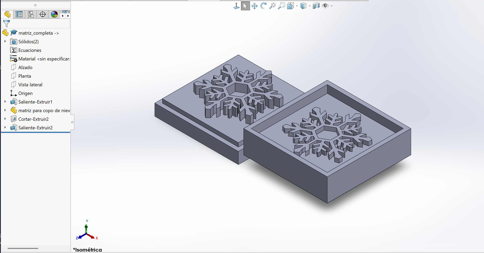

Proyectos de Ingeniería
En este apartado se documentan todos mis trabajos y proyectos relacionados con la materia de Proyecto de Ingeniería. Esta asignatura es crucial, ya que aplica los conocimientos científicos y matemáticos para resolver problemas técnicos, abarcando desde la fase de conceptualización hasta la implementación y validación del producto final.
Un Proyecto de Ingeniería es un esfuerzo temporal y planificado, diseñado para crear un producto, servicio o resultado único dentro de restricciones específicas (tiempo, presupuesto, recursos). Mi portafolio refleja las fases clave de este proceso, incluyendo el Diseño Asistido por Computadora (CAD), la Manufactura Sustractiva (Mecanizado y CNC) y la Manufactura Aditiva (Impresión 3D).
Trabajos Semanales
Este apartado muestra mis avances y trabajos realizados a lo largo de las semanas, sirviendo como un registro detallado de las competencias adquiridas en fabricación digital y manufactura.
Semana 1: Planificación y Fundamentos Documentales
El trabajo inicial se centra en la planificación y la documentación, pilares de la gestión de proyectos. El Syllabus actúa como el Acta de Constitución del Proyecto, definiendo el alcance, los entregables y las restricciones de tiempo y recursos para el semestre. En ingeniería, este paso es vital para establecer el alcance y prevenir el Scope Creep (expansión descontrolada del alcance).
Syllabus Firmado
Syllabus firmado en formato PDF, el estándar industrial para garantizar la integridad y portabilidad del documento técnico.

Semana 2: Introducción al Modelado Sólido 3D
- Tema Central: Diseño Asistido por Computadora (CAD) Paramétrico.
Tarea 1, Primer Sólido 3D
Primer solido 3D realizado en SolidWorks, un software de CAD paramétrico. Este ejercicio establece la base del modelado sólido, donde los objetos se definen por parámetros (cotas) y características (operaciones de diseño), permitiendo una modificación no destructiva y eficiente del modelo.

Semana 3: Manufactura Sustractiva y Mecanizado Convencional
- Tema Central: Procesos de Mecanizado y Seguridad Industrial.
Primera Práctica con Máquinas en el IDIT


En esta sección se documenta el trabajo inicial con maquinaria de manufactura sustractiva. El objetivo fue adquirir habilidades en el uso de herramientas tanto para el corte y lijado de madera como para el manejo inicial de equipos de corte de metal. Esta práctica es fundamental para comprender las limitaciones físicas y las tolerancias reales del proceso de fabricación. Se enfatizó la importancia de las normas de seguridad industrial (EHS), un componente crítico en cualquier entorno de ingeniería y producción.
Videos de la Práctica
Resultado de la Práctica

El producto final fue un soporte para celular funcional elaborado con lámina de madera. Esta actividad integró procesos de corte preciso, perforado y lijado, demostrando la capacidad de llevar un diseño conceptual a un objeto físico con resistencia y estética. Este ejercicio sirve como base para comprender cómo la práctica constante se traduce en habilidades aplicables en proyectos funcionales.
[soporte_para_celular (Imagen)]
Semana 4: Diseño CAD Avanzado y Archivos Vectoriales
- Tema Central: Aplicación de Herramientas de Modelado y Diseño 2D para Fabricación.
Ejercicios 2 y 5
Ejercicios realizados en clase, reforzando el uso de herramientas paramétricas complejas dentro de SolidWorks.


Florero con Función de Recubrir
Florero diseñado en SolidWorks. Este ejercicio aplicó la función de Vaciado (Shell), fundamental en la ingeniería para simular procesos de manufactura como el moldeo o la fundición, creando un espesor de pared uniforme.

Tarea 2: Diseño de Macetas
Realización de 3 macetas diferentes, utilizando y combinando las herramientas de modelado paramétrico aprendidas en SolidWorks, demostrando la versatilidad del software.


Tarea 3: Trazado de Logo para Grabado Láser
Realización del trazado vectorial de un logo. Este diseño fue crucial, ya que se exportó en formato DXF (Drawing Exchange Format). El DXF contiene los datos vectoriales (líneas y contornos) que la máquina de Corte Láser CNC necesita para seguir trayectorias precisas de corte o grabado.

Semana 5: Aplicación de Corte y Grabado Láser CNC
- Tema Central: Fabricación Digital Sustractiva por Energía (Láser).
Aprendiendo a Usar la Cortadora Láser
Durante esta práctica, se exploró el uso de la Cortadora Láser CNC, una máquina controlada por computadora que utiliza un haz concentrado para vaporizar material (en este caso, MDF de 3 mm) a lo largo de un recorrido vectorial. Se aprendió la importancia de configurar correctamente los parámetros de corte (Potencia y Velocidad) para obtener bordes limpios y precisos, minimizando el quemado.


Videos de la Operación Láser
Tarea: Grabado y Corte Láser Autónomo
Esta tarea consistió en aplicar los conocimientos de la máquina láser, realizando dos actividades esenciales: 1. Corte Vectorial: Cortar un diseño propio en MDF, utilizando el archivo .DXF previamente preparado. 2. Grabado (Rasterizado): Grabar el logo diseñado en la Tarea 3 sobre el soporte para celular, demostrando la capacidad de la máquina para trabajar tanto con corte como con grabado de precisión.


Semana 6: Principios de Impresión 3D (FDM)
- Tema Central: Manufactura Aditiva por Fused Deposition Modeling (FDM).
Impresión 3D con Impresora Creality
El enfoque fue la Manufactura Aditiva, específicamente la tecnología FDM (Fused Deposition Modeling), que construye objetos depositando material capa por capa. El diseño se orientó a crear algo que fuese difícil de fabricar por métodos sustractivos. El Portaherramientas diseñado aprovecha las ventajas de la impresión 3D para crear cavidades y formas internas complejas, ideales para optimizar el almacenamiento.
Diseño en SolidWorks
Archivo en .STL
El modelo se exportó a formato STL (Stereolithography), el estándar para la impresión 3D, que describe la geometría del objeto como una malla de triángulos, lista para ser procesada por el *slicer*.
Resultado

Tomando un Curso de Fabricación Digital
La formación virtual en Fabricación Digital complementa la práctica, proporcionando una base teórica sólida sobre las tecnologías aditivas y sustractivas, mejorando el criterio para la selección de procesos de manufactura.

Semana 7: Escaneo 3D e Integración IA-Diseño
- Tema Central: Ingeniería Inversa y Digitalización Geométrica.
De IA a Impresión 3D: Diseño Generativo
Esta semana se exploró la integración de la Inteligencia Artificial (IA) en el flujo de diseño. Se utilizó Gemini para generar la imagen de un personaje (diseño 2D) y la plataforma Tripo 3D para convertir esa imagen a un modelo 3D imprimible. Este proceso demuestra el potencial del Diseño Generativo para acelerar la conceptualización y el prototipado físico.
Imagen Generada por Gemini

Archivo en .gcode
El modelo 3D (STL) se procesó en el software Slicer para generar el G-code (.gcode), el lenguaje de programación que la impresora 3D interpreta para los movimientos, la temperatura y la extrusión capa por capa.
Resultado de la Impresión


Escaneo 3D: Capturando la Realidad
Se aprendió la técnica de Escaneo 3D, el proceso de convertir objetos físicos en modelos digitales. Es la base de la Ingeniería Inversa y el Control de Calidad Dimensional.
¿Cuándo Usarías un Escáner 3D en tu vida?
Usaría un escáner 3D profesional para proyectos de alta precisión como la ingeniería inversa o la inspección de calidad de componentes críticos, donde se requieren tolerancias estrictas y máximo detalle (Métodos de Luz Estructurada o Láser). En contraste, usaría mi celular con fotogrametría para tareas cotidianas y rápidas donde la precisión es secundaria, como documentar entornos o generar modelos de referencia iniciales, aprovechando la triangulación de múltiples imágenes. A futuro, el escaneo profesional será clave en el desarrollo de robótica avanzada y la fabricación automatizada, mientras que el escaneo móvil facilitará el mantenimiento predictivo y la integración de la Realidad Aumentada en campo.
Escáner por Fotogrametría de un Objeto Cualquiera
La Fotogrametría utiliza múltiples fotografías para reconstruir la geometría. Es ideal para objetos con texturas y proporciona un modelo rápido de baja a media fidelidad.

Escáner Profesional Creality (Rostro)
El escaneo con un equipo profesional (Escáner 3D infrarrojo de luz estructurada) permite una captura rápida y de alta precisión de la superficie del rostro, esencial para aplicaciones de personalización como prótesis o equipos de protección ajustados anatómicamente.


Semana 8: Conformado de Lámina Metálica y Soldadura
- Tema Central: Procesos de Conformado Plástico y Unión por Resistencia.
Práctica 2 en el IDIT
Esta práctica se centró en la Manufactura de Lámina Metálica, trabajando con acero negro de calibre 22. El calibre indica el grosor, siendo menor el número para un material más grueso. Los procesos clave fueron: 1. Corte (Cizallado): Uso de tijeras para lámina. 2. Doblado (Plegado): Aplicación de fuerza para deformar la lámina y crear ángulos, compensando el retorno elástico (*springback*). 3. Unión (Soldadura de Punto): Un proceso de soldadura por resistencia ideal para láminas delgadas, que aplica corriente y presión para fusionar dos puntos sin material de aporte. El resultado fue la replicación de una pieza hecha con lámina a partir de un plano, poniendo énfasis en el uso correcto del equipo de seguridad y las máquinas.


Videos de la Operación de Lámina
Resultado de la Práctica


Tarea Semana 8: Caja con Bisagras
La tarea consistió en realizar una caja con lámina de acero negro de calibre 24, incorporando bisagras. Esto reforzó la secuencia completa de la manufactura de lámina: medición precisa, corte, doblez (asegurando el cierre) y soldadura de punto para ensamblar la estructura.


Semana 9: Dominio del Router CNC
- Tema Central: Mecanizado CNC de 2.5 y 3 Ejes.
Introducción al Router CNC
El Router CNC es una fresadora controlada por computadora que utiliza una herramienta rotativa (fresa) para retirar material. Es ideal para trabajar en materiales como madera, acrílico y aluminio. Aprendimos la cadena completa de CAD/CAM: diseñar la pieza, generar las trayectorias de herramienta en un software CAM y crear el G-code o Código NC para la máquina.

Trabajos Relacionados al Router
Se realizaron dos proyectos clave: 1. Modelado 3D (Matriz): Demostración de movimiento en 3 ejes (X, Y, Z) para crear una superficie curva, ideal para moldes de resina. 2. Corte/Grabado 2.5D (Cartel): Uso de los ejes X e Y con el eje Z controlando la profundidad de grabado y corte. El aprendizaje se centró en la selección correcta de operaciones y herramientas (fresas) para optimizar el acabado y el tiempo de mecanizado.
Matriz Copo de Nieve (Modelado 3D)

Tabla de Bienvenida (Corte y Grabado 2.5D)


Curso Router CNC